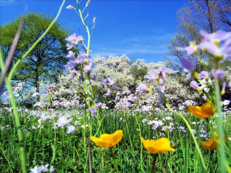
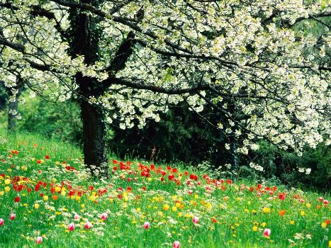
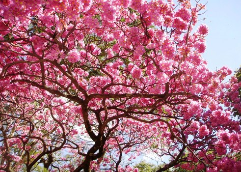

O dia 22 de setembro marca a chegada da primavera no hemisfério sul. A estação que vem logo depois do inverno e antes do verão costuma ser muito agradável, pois é marcada por um suntuoso espetáculo da natureza. Esta atmosfera primaveril só prevalece no hemisfério norte no período que se estende de 21 de março a 21 de junho.

A estação mais colorida e perfumada do anoA estação que prevalece nos países abaixo da linha do Equador entre 22 de setembro e 21 de dezembro se chama primavera austral. Neste período, os dias com aspecto cinzento e frio do inverno vão ficando no passado para que a natureza seja composta por novos cenários, mais coloridos e atrativos. As temperaturas também gradualmente, devido à aproximação do verão.
Os povos antigos tinham o costume de celebrar a chegada da primavera, como por exemplo, os gregos, celtas, egípcios, sumérios e babilônios. As civilizações realizavam grandes festivais para comemorar a fertilidade de todos os seres vivos. Ou seja, a natureza acordava depois de repousar durante todo o inverno, favorecendo assim o cultivo de flores e alimentos.
A palavra primavera vem do latim “primo vere”, que significa “começo do verão”. A estação foi nomeada na época do Império Romano, quando o ano foi dividido em quatro períodos distintos.

Várias espécies de plantas florescem durante a primavera, moldando desta forma paisagens coloridas e perfumadas. As flores começam a brotar porque é o período de reprodução de todos os seres semeados na terra. Com relação às mudanças climáticas, a estação é caracterizada por temperaturas que aumentam gradualmente. A incidência de chuvas também é significativa em alguns países.
Algumas espécies de flores ganham destaque na primavera, como por exemplo, a rosa, o girassol, a orquídea, o jasmim, a hortênsia, a gérbera, o hibisco, a boca-de-leão, a estefânia, o narciso, a violeta e a dama-da-noite.
As árvores também costumam florescer ao longo a primavera, deixando os cenários naturais mais bonitos e agradáveis. Os ipês são característicos da estação, pois são cobertos de flores de diferentes cores, como rosa, roxo, branco e amarelo.O ipê florido é um dos símbolos da primavera.
,
Durante a primavera, a maioria dos animais se reproduzem. A ocasião se revela ideal para ter filhotes, já que a natureza oferece alimentos para a fêmea e seus “bebês”.
Por causa dos poluentes que estão sendo depositados no planeta, a temperatura se eleva, fazendo o inverno terminar mais cedo e a primavera começar antes da hora.Desta forma, o ciclo da natureza fica bagunçado e compromete a manutenção da vida de todos os seres.
A estação das flores tem um clima ameno, normalmente caloroso durante o dia e fresco à noite. Ela é perfeita para fazer passeios e praticar esportes ao ar livre. As piscinas dos clubes e as praias também ficam mais movimentadas graças às temperaturas agradáveis da primavera.